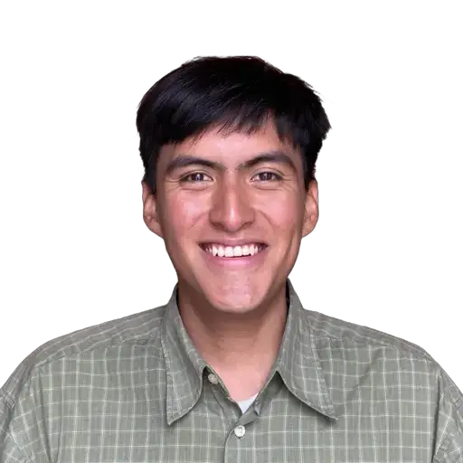
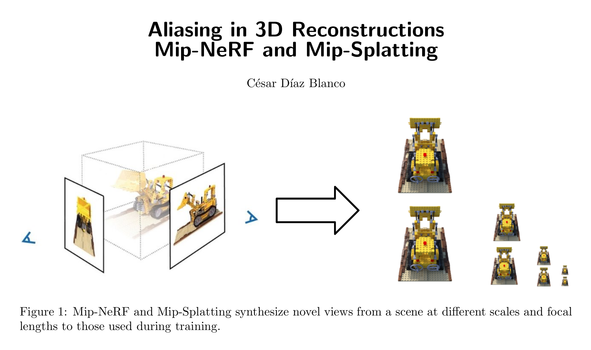
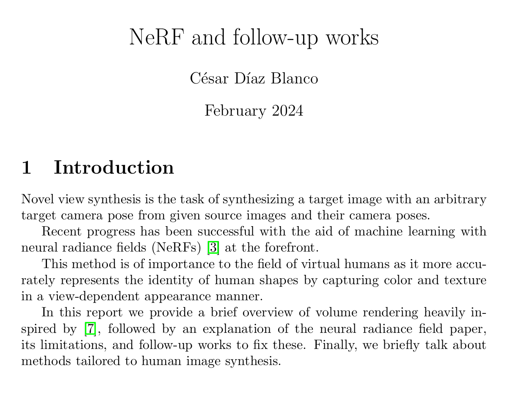
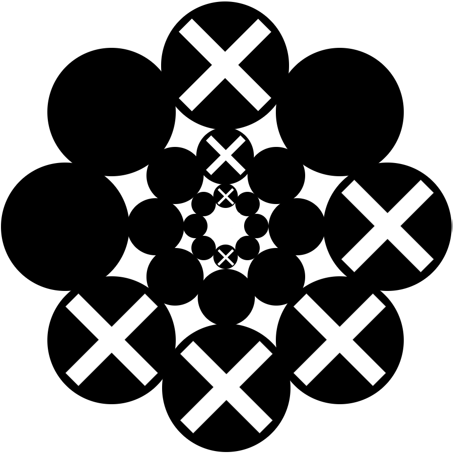

César Díaz Blanco
Hi there! I am a Machine Learning Master's student at the University of Tübingen
interested in 3D Computer Vision, particularly in scalable representations and models that enable geometrically grounded and visually rich world models.
During my Master's, I have had the privilege of working with:
- The Autonomous Vision Group led by Prof. Dr.-Ing. Andreas Geiger
- The Real Virtual Humans Group led by Prof. Dr. Gerard Pons-Moll
- DeepScenario as a part-time Computer Vision and Software Engineer

Master Thesis: Geometrically Accurate Feed-Forward Gaussian Splatting for Unbounded Scenes
Advisors: Zehao Yu, Haofei Xu, Andreas Geiger
A Feed-Forward Gaussian Splatting model designed to generate geometrically accurate, unbounded scenes from 16 images in 0.4 seconds, with full mesh extraction in 0.9 seconds
• Improved mesh reconstruction precision on the Tanks and Temples (TnT) dataset by 41% over the photometric-only encoder, matching per-scene optimization performance
• Reduced absolute relative error for depth prediction across MipNeRF360, TnT, and DL3DV by 30% against the photometric-only encoder and 39% against Depth Anything 3
Slides
Text-Driven Multi-View Fashion Editing
César Díaz Blanco, Garvita Tiwari, Berna Kabadayi, Nikita Kister, Gerard Pons-Moll
A text-guided two-stage fashion editing framework that utilizes state-of-the-art generative models to modify garments with strict 3D consistency across multi-view images
• Created an evaluation suite for the outer garment-removal task to quantify 3D consistency on generated regions, removal success, generation quality, and preservation of unmodified regions
• Achieved a 90% removal success rate on the 4D-DRESS dataset and validated 3D consistency by optimizing a 3DGS scene on 10 generated views, yielding 28.44 PSNR on 10 held-out images
Paper •
Code
Electron Heating Models in General Relativistic Magnetohydrodynamic Fluid Simulation
César Díaz Blanco, Vedant Dhruv, Charles F. Gammie
• Implemented test problems in C/C++ to assess the correct evolution of the fluid's entropy in the group's second-order, energy-conservative parallel simulation code
• Analyzed error convergence of the fluid variables to the analytical solution by calculating its norm across multiple parameters and timescales
Slides •
Code
Gaussian Head Viewer
Daniel Eskandar, César Díaz Blanco, Berna Kabadayi, Gerard Pons-Moll
Gaussian Splatting Visualizer for head avatars compatible with PhysHead (CVPR 2026)
• Implemented a gaussian axes view with OpenGL using vertex and fragment shaders
• Enabled on-the-fly curly hair editing with controllable amplitude and frequency
Slides •
Report •
Code
Neural network framework from scratch using NumPy
• Implemented backpropagation with support for sigmoid, softmax, ReLU, and linear layers
• Integrated several optimizers including Adam, mini-batch SGD, and SGD
• Capable of learning images with different positional encodings
Code

Aliasing in Novel View Synthesis
Slides and report focusing on the shortcomings of NeRF and 3DGS when rendering images at different sampling rates than those in the training set. It gives a brief but detailed description of NeRF and 3DGS to understand where they fail, introduces Mip-NeRF and Mip-Splatting solutions, and highlights aliasing effects specific to differential rendering methods.
Slides •
Report

NeRF and follow-up works
Report focusing on the volume rendering equation, its approximation in NeRF, and succesive works addresing dynamic scenes, efficient training, and surface extraction.
Report

TicGaToe
Reimagination of Connect4 on a circular board to play against your friends.
Get four of your checkers in a row forming a semicircle at any level or a line through the center.
Once a player has won, its checker will appear in the middle of the board.
Tap the center twice to play again.
Play!